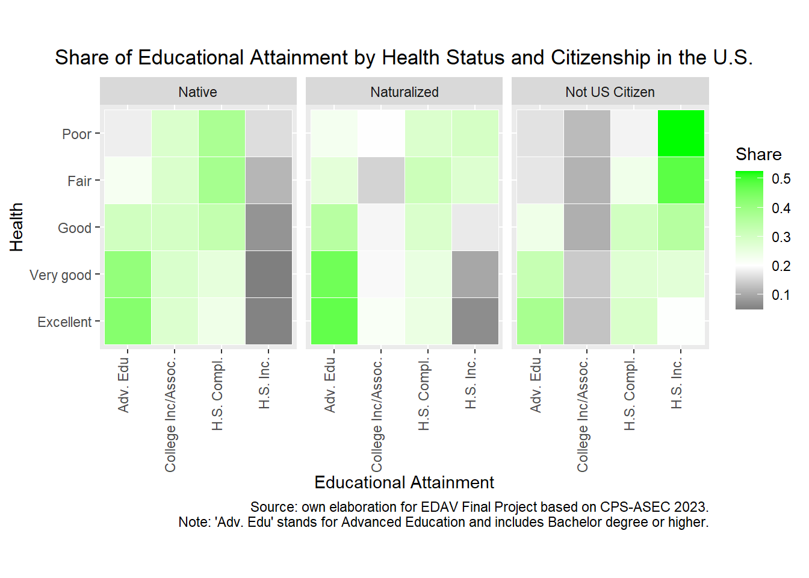

Warning: package 'cpsR' was built under R version 4.3.2
Code
library(tidyverse)
Warning: package 'forcats' was built under R version 4.3.2
── Attaching core tidyverse packages ──────────────────────── tidyverse 2.0.0 ──
✔ dplyr 1.1.3 ✔ readr 2.1.4
✔ forcats 1.0.0 ✔ stringr 1.5.0
✔ ggplot2 3.4.3 ✔ tibble 3.2.1
✔ lubridate 1.9.2 ✔ tidyr 1.3.0
✔ purrr 1.0.2
── Conflicts ────────────────────────────────────────── tidyverse_conflicts() ──
✖ dplyr::filter() masks stats::filter()
✖ dplyr::lag() masks stats::lag()
ℹ Use the conflicted package (<http://conflicted.r-lib.org/>) to force all conflicts to become errors
Code
library(ggplot2)library(DataExplorer)
Warning: package 'DataExplorer' was built under R version 4.3.2
Code
library(data.table)
Attaching package: 'data.table'
The following objects are masked from 'package:lubridate':
hour, isoweek, mday, minute, month, quarter, second, wday, week,
yday, year
The following objects are masked from 'package:dplyr':
between, first, last
The following object is masked from 'package:purrr':
transpose
Since there are certain features whose categories are too detailed for our purposes, we make the following preprocessing:
Code
### Sex ###df$Sex <-factor(df$Sex, levels =c(1, 2), labels =c("Male", "Female"))### Citizenship ###df$Citz <-factor(df$Citz, levels =c(1, 2, 3, 4, 5), labels =c("Native", "Native", "Native", "Naturalized", "Not US Citizen"))# We group:# categories 1 (Native, born in the US), 2 (Native, born in PR or US outlying are) and 3 (Native, born abroad of US parent(s)) into "Native". #table(df$Citz)### Employment ###df$Empt <-factor(df$Empt, levels =c(0, 1, 2, 3, 4, 5, 6, 7), labels =c("NIU","Employed", "Employed", "Unemployed", "Unemployed", "Retired", "Disabled", "Other"))# We group: # categories 1 (Employed - at work) and 2 (Employed - absent) into "Employed"# categories 3 (Unemployed - on layoff) and 4 (Unemployed - looking) into "Unemployed". #table(df$Empt)### Education ####table(df$Edu)df$Edu <-ifelse(df$Edu >=31& df$Edu <=38, 30, df$Edu)# We group categories 31 to 38 into 30 (than we'll label it as "High school Incomplete")df$Edu <-factor(df$Edu, levels =c(0, 30, 39, 40, 41, 42, 43, 44, 45, 46), labels =c("Children","H.S. Inc.", "H.S. Compl.", "College Inc.", "Associate", "Associate", "Bachelor", "Master", "Professional Degree", "PHD"))# We group categories 41 and 42 into "Associate"#table(df$Edu)### Race ####table(df$Race)df$Race <-ifelse(df$Race >=6, 6, df$Race)df$Race <-factor(df$Race, levels =c(1, 2, 3, 4, 5, 6), labels =c("White","Black", "American Indian", "Asian", "Pacific Islander", "Mixed"))#table(df$Race)### Disabled ###df$Pwd <-factor(df$Pwd, levels =c(0, 1, 2), labels =c("NIU", "Yes", "No"))#table(df$Pwd)### Health Status ###df$Health <-factor(df$Health, levels =c(1, 2, 3, 4, 5), labels =c("Excellent", "Very good", "Good", "Fair", "Poor"))#table(df$Health)### Insurance Coverage ###df$Ins <-factor(df$Ins, levels =c(1, 2), labels =c("Yes", "No"))
For instance, we have grouped the categories 1 (Employed - at work) and 2 (Employed - absent) into “Employed” on the feature that indicates the employment status.
To see the column types:
Code
data.frame(sapply(df,class))
sapply.df..class.
ID numeric
Wt numeric
State integer
Co integer
Health factor
Age integer
Sex factor
Citz factor
Race factor
Empt factor
Edu factor
Earn integer
Pwd factor
Ins factor
MExp integer
Inc integer
Finally, we update the theme of ggplot to center the titles by default:
The overall perception of self state of health of people living in the U.S. based on the Annual Social and Economic Supplement (CPS-ASEC) 2023 is as follows:
Code
library("ggplot2")# Perception of Self State of Health in the United Statesggplot(df, mapping=aes(x=fct_rev(Health), weight = Wt/1e6))+geom_bar(fill="#1F78B4", alpha=.6, width=.6) +geom_text(stat ="count", aes(label=sprintf("%.1fM", ..count..)), vjust =-0.2, hjust =-0.1, color ="#004080", size =3, fontface ="bold" ) +geom_text(stat ="count", aes(label =sprintf("(%.1f%%)", ..count.. /sum(..count..) *100)),vjust =1.3, hjust =-0.1, color ="#1F78B4", size =3, fontface ="bold") +coord_flip() +scale_y_continuous(labels = scales::comma, limits =c(0, 120)) +labs(x ="Health Status",y ="Weighted Frequency (in millions)", caption ="Source: own elaboration for EDAV Final Project based on CPS-ASEC 2023.") +ggtitle("Perception of Self State of Health in the United States") +theme(panel.background =element_rect(fill ="white"))
Warning: The dot-dot notation (`..count..`) was deprecated in ggplot2 3.4.0.
ℹ Please use `after_stat(count)` instead.
As it was explained in the Data Section, the CPS-ASEC 2023 contains information on 146,133 individuals, so to build the graph for the entire population we use the variable that weights each observation.
The health status category that is most reported is “Very good” with 33.2% of the population, followed by “Excellent” with a share of 28.9% and “Good” with 27%. Combined together, almost 9 out of 10 people report an at least good health status.
On the contrary, 9 million people (2.7%) suffer a poor health status and 27 million people (8.2%) a fair one.
In the next sections we will study how the self state of health correlates with other dimensions such as employment, earnings, race, education, among others.
3.2 Association between Health and dimensions Race, Sex and Employment
First, it is worth noting that we have drawn different graphs for employed and unemployed people, since they have different sizes.
For both the employed and unemployed people, we see that the proportion of women that suffers a weak state of health is greater than the proportion of men. For employed people, it is specially more notorious for those that has fair health (i.e., the regions shaded in orange), whereas for unemployed people it is clear for both that suffer a fair or poor health (i.e., the regions shaded in orange and red).
Regarding the race, for both employed and unemployed people, the proportion of black people that suffers a weak state of health is greater than the proportion corresponding to White or Asian people. Particularly, Asian population seems to have a quite good state of health (for unemployed ones, even better than the health of white people).
Comparing the two graphs, i.e. the population of employed and unemployed people, we see that for all races and sex, the employed people have a better health than the unemployed people which makes sense. In addition, the group of people that has the higher proportion of people with weak health (i.e., fair or poor health) is the black women without employment showing inequalities on health across U.S. people in terms of sex, race and employment status.
In this section we have learned that there appears to be a difference in health status depending on whether a person is currently employed or unemployed. In the next section we focus on those who are employed and study whether there is a difference on health based on earnings.
3.3 How does earnings associate with health?
In this section we analyze how the distribution of earnings of employed people differs based on the health status.
Code
library(ggridges)filter(df, Empt =="Employed"& Age>=18) %>%ggplot(df, mapping=aes(x = Earn, y =fct_rev(Health)), weight = Wt/1e6) +geom_density_ridges(fill ="blue",alpha = .5, scale =0.9) +geom_boxplot(pch =21, width =0.5, alpha =0.3) +ggtitle("Distribution of Earnings for Employed People by Health Status") +labs(y ="Health", x ="Earnings (in millions)") +scale_x_continuous(labels = scales::comma_format(scale =1e-6),limits =c(0, 1200000))
# The graph would be the same if we order y-axis by the median of earnings y= reorder(Health, Earn, median).
The previous graph is quite interesting. First, it shows that the distribution of earnings is right-skewed for every category of health status. In addition, it shows that there seems to be a positive correlation between earnings and health. Indeed, looking at the boxplots, it follows that the both the first quartile (Q1), the median and the third quartile (Q3) of earnings increases with health status. Indeed, for instance the median of people that have an “excellent” -perceived- state of health is higher than the mean of those that have a “very good” state of health, which is in turn higher than the median corresponding to people that have a “good” state of health and so on. In other words, wealthier people enjoys a better state of health than poorer people.
3.4 Are more educated people healthier?
In this section we study whether or not more educated people are healthier. In particular, we analyze the different shares of educational attainment for each level of health status.
In the first part we split the population (aged 18 or more) by citizenship, and in the second part by race.
3.4.1 Analysis by Citizenship
The following graph shows the shares of the population with different educational attainment for the each level of health status, by citizenship.
Code
df <- df %>%mutate(Edu_Grouped =case_when( Edu %in%c("College Inc.", "Associate") ~"College Inc/Assoc.", Edu %in%c("Bachelor", "Master", "Professional Degree", "PHD") ~"Adv. Edu",TRUE~ Edu ))df_3 <-filter(df, Age>=18) %>%group_by(Citz, Health, Edu_Grouped) %>% dplyr::summarize(Freq =sum(Wt))
`summarise()` has grouped output by 'Citz', 'Health'. You can override using
the `.groups` argument.
Code
df_3 <- df_3 %>%group_by(Citz, Health) %>%mutate(Total =sum(Freq)) %>%ungroup()ggplot(df_3, aes(x = Edu_Grouped, y = Health)) +geom_tile(aes(fill = (Freq/Total)), color ="white") +coord_fixed() +scale_fill_gradient2(low ="black", mid ="white",high ="green", midpoint = .2, name ="Share") +facet_wrap(~Citz) +theme(axis.text.x =element_text(angle =90, hjust =1, vjust =0)) +labs(x ="Educational Attainment", caption ="Source: own elaboration for EDAV Final Project based on CPS-ASEC 2023.\n Note: 'Adv. Edu' stands for Advanced Education and includes Bachelor degree or higher.") +ggtitle("Share of Educational Attainment by Health Status and Citizenship in the U.S.")

Let us analyze first the graph corresponding to Native U.S. citizens.
We see that for those people who enjoy an excellent or very good state of health, the square corresponding to the ‘Adv edu’ (which stands for ‘Advanced Education’, i.e., bachelor degree or higher) is filled in green color. This implies that it is quite probable for a person who enjoys a really good health status to have an advanced education degree. On the contrary, we can see that for these groups of people the squares associated with ‘H.S. Inc’ (High School Incomplete) are dark grey. This means that it is quite unlikely that the healthiest people have not completed at least high school.
On the other hand, if we analyze people who suffer a weak state of health (i.e., a poor or fair one) we see that the squares corresponding to advanced education are ‘not longer’ green, instead they are grey and white. This shows that for people with weak health it is quite unlikely to have an advanced level of education. On the contrary, as it can be seen on the graph, it is quite probable to ‘only’ have reached a high school degree.
This positive correlation between health and educational attainment can be also understood in a different way. For the columns corresponding to higher levels of education (i.e., advanced education), the colors range from darker grey colors at the top (poor health) to green colors at the bottom (excellent health), whereas something opposite occurs for more basic levels of education.
Something similar happens to the other citizenship categories such as “Naturalized” or “Not U.S. Citizen”. It is particularly interesting to note that for those non U.S. citizens that suffer a weak state of health (i.e., poor or fair) it is quite likely to have a poor level of education since the corresponding squares are green.
`summarise()` has grouped output by 'Race', 'Health'. You can override using
the `.groups` argument.
Code
df_4 <- df_4 %>%group_by(Race, Health) %>%mutate(Total =sum(Freq)) %>%ungroup()ggplot(df_4, aes(x = Edu_Grouped, y = Health)) +geom_tile(aes(fill = (Freq/Total)), color ="white") +coord_fixed() +scale_fill_gradient2(low ="black", mid ="white",high ="green", midpoint = .2, name ="Share") +facet_wrap(~Race) +theme(axis.text.x =element_text(angle =90, hjust =1, vjust =0)) +labs(x ="Educational Attainment", caption ="Source: own elaboration for EDAV Final Project based on CPS-ASEC 2023.\n Note: 'Adv. Edu' stands for Advanced Education and includes Bachelor degree or higher.") +ggtitle("Share of Educational Attainment by Health Status and Race in the U.S.")
When we split the population by race instead of citizenship, we continue observing an positive correlation between health and education.
For instance, we see that for those people who enjoy a really good state of health, the square corresponding to advanced education is filled in green color (especially for white and asian people). This implies that it is quite probable for a person who enjoys a really good health status to have an advanced education degree. On the contrary, we can see that for these groups of people the squares associated with a low education level are dark grey. This means that it is quite unlikely that the healthiest people have not completed at least high school.
3.5 Working on it: Expenses on Health
Code
set.seed(3267)samp_idx <-sample(seq_len(nrow(df)), size=300, prob=df$Wt)new_data <- df[samp_idx, ]p <-ggplot(new_data, aes(x = Inc, y = MExp, label = State)) +geom_point(aes(color = Ins), size =0.8, alpha =0.5) +scale_color_manual(values =c("Yes"="darkgreen", "No"="red")) +facet_wrap(~Health, scales ="free") +scale_x_continuous(labels = scales::comma_format(scale =1e-3)) +scale_y_continuous(labels = scales::comma_format(scale =1e-3)) +labs(x ="Income (in thousands)",y ="Expenditure on health (in thousands)", caption ="Source: own elaboration for EDAV Final Project based on CPS-ASEC 2023.") +labs(color ="Insurance") +ggtitle("Expenditure on Health") +theme(legend.title =element_text(size =8)) +theme_minimal() p_plotly <- plotly::ggplotly(p)p_plotly